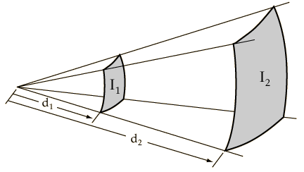

Estimating Sound Levels With the Inverse Square Law
In the real world, the inverse square law is always an idealization because it assumes exactly equal sound propagation in all directions. If there are reflective surfaces in the sound field, then reflected sounds will add to the directed sound and you will get more sound at a field location than the inverse square law predicts. If there are barriers between the source and the point of measurement, you may get less than the inverse square law predicts. Nevertheless, the inverse square law is the logical first estimate of the sound you would get at a distant point in a reasonably open area.

You can explore numerically to confirm that doubling the distance drops the intensity by about 6 dB and that 10 times the distance drops the intensity by 20 dB.
|
Index
Auditorium acoustics |